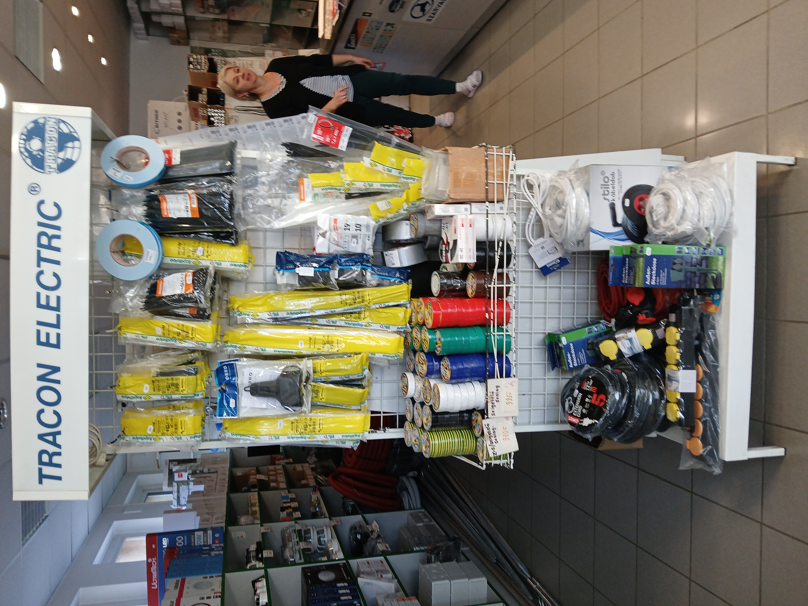
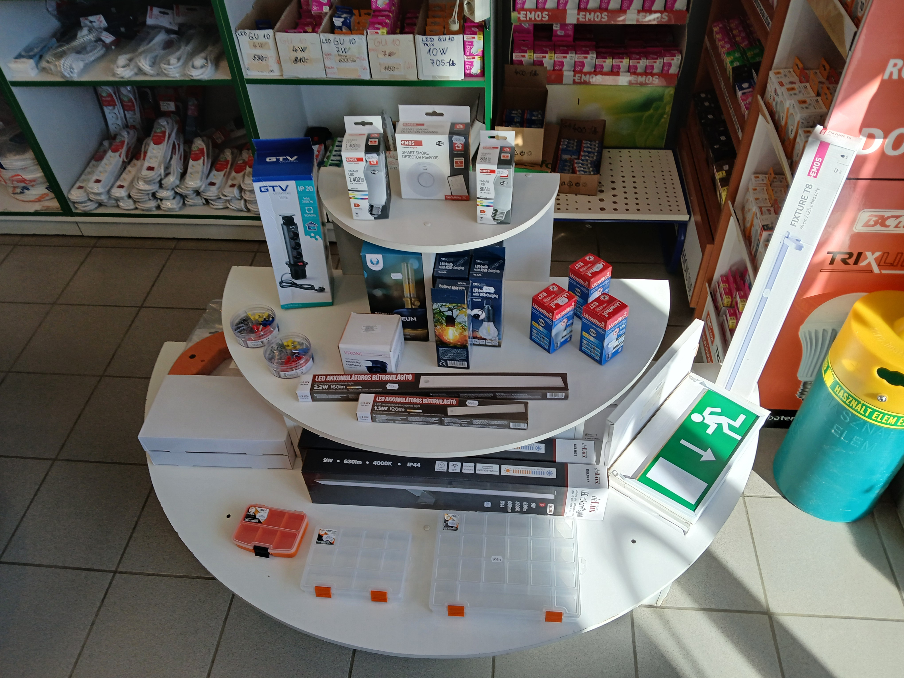
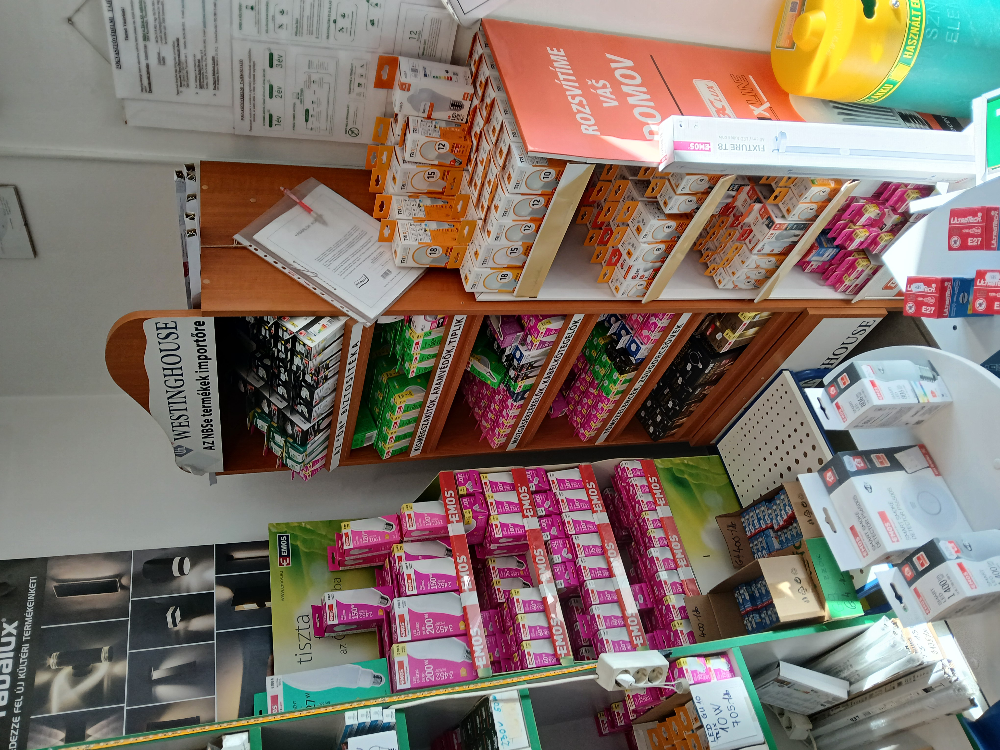
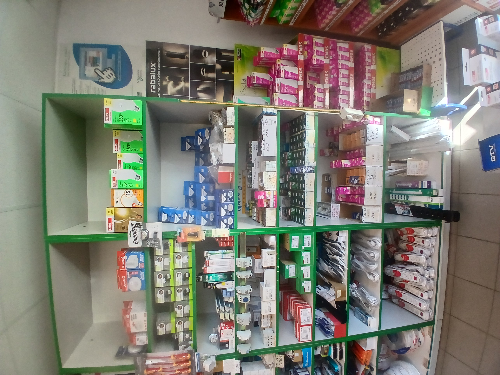
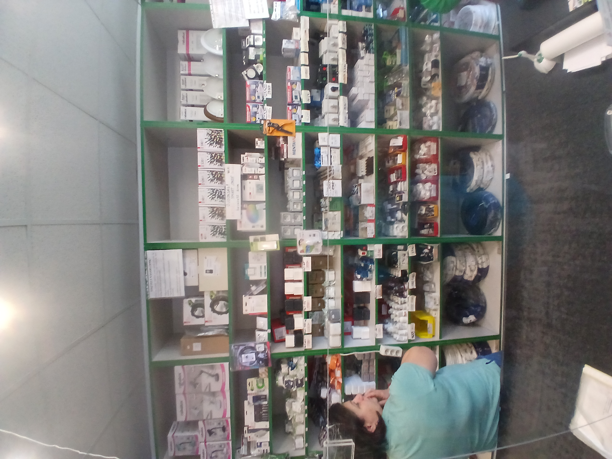
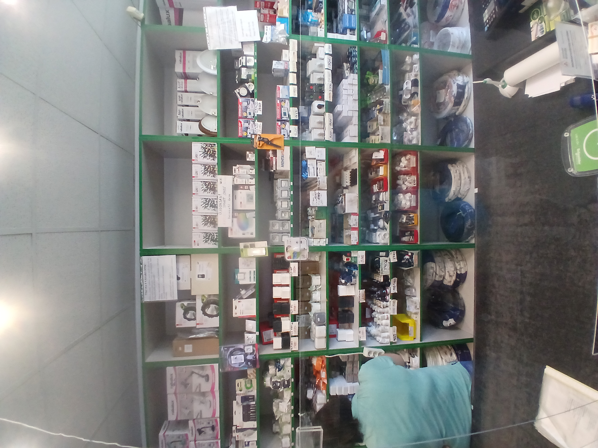
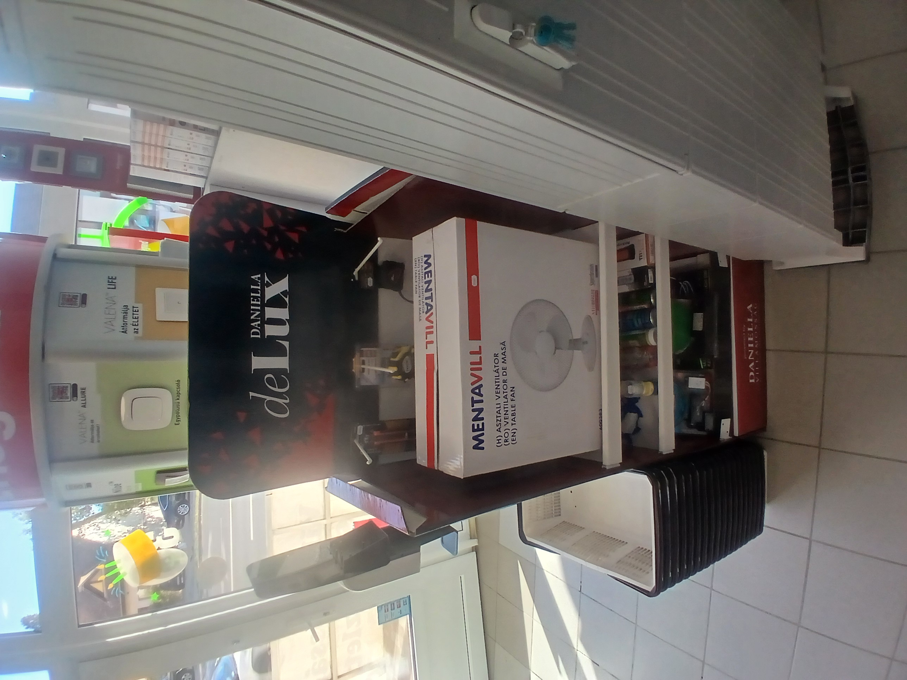
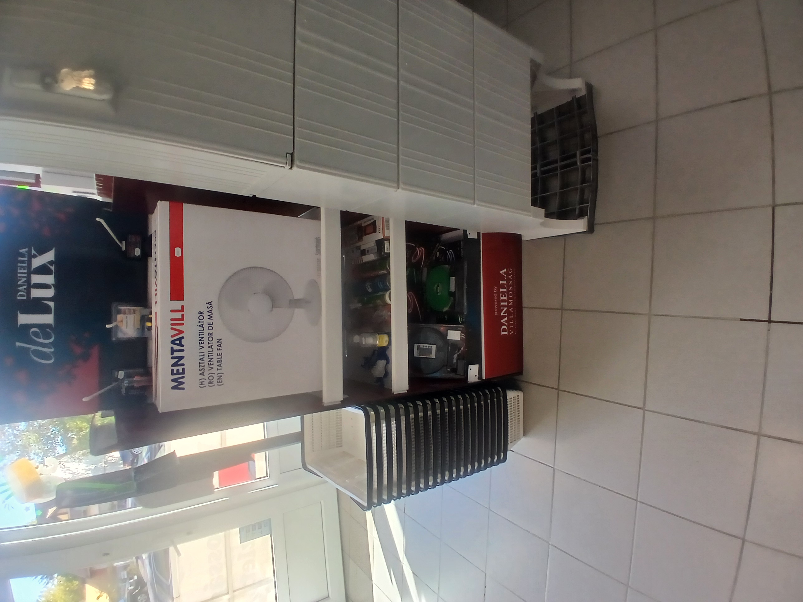

Feldolgozott képek és felismert termékek
8 feldolgozott kép · 107 egyedi termék
A képek alatt a hozzájuk rendelt CSV-adatok láthatók. Az átfedő termékek csak egyszer, a kiválasztott forrásképnél szerepelnek. A bizonytalan adatokra a leírások utalnak. Ez az oldal a jelenlegi feldolgozás statikus összesítése.
Forrás: CSV letöltése
1. kép — processed_20261002_094001.jpg

Felismert termékek: 21
Fehér kábelkötegelő
Tasakos műanyag kábelkötegelők; a nem olvasható méretváltozatok összevonva.
Egyedi azonosító: BAL-b4a63d7edf477b8d
Fekete kábelkötegelő
Tasakos műanyag kábelkötegelők; pontos méretük nem olvasható.
Egyedi azonosító: BAL-da2b2401bfc3889e
Fehér szeges kábelrögzítő
Fehér műanyag kábelrögzítő bilincsek szeggel; méretük nem olvasható.
Egyedi azonosító: BAL-956bc882126a3f73
Csavaros sorkapocsléc
Fehér többpólusú elektromos vezetékösszekötő; terhelhetősége nem olvasható.
Egyedi azonosító: BAL-6734bd47f21e5e38
EMOS villanyszerelési szigetelőszalag – fekete
Tekercses szigetelőszalag; színe: fekete. Pontos mérete nem olvasható.
Egyedi azonosító: BAL-9faa3008efd68ba7
EMOS villanyszerelési szigetelőszalag – kék
Tekercses szigetelőszalag; színe: kék. Pontos mérete nem olvasható.
Egyedi azonosító: BAL-c88a0ad413ad57e8
EMOS villanyszerelési szigetelőszalag – piros
Tekercses szigetelőszalag; színe: piros. Pontos mérete nem olvasható.
Egyedi azonosító: BAL-c7666bb8a0a7a3cd
EMOS villanyszerelési szigetelőszalag – fehér
Tekercses szigetelőszalag; színe: fehér. Pontos mérete nem olvasható.
Egyedi azonosító: BAL-383e6fe3a875f9dd
EMOS villanyszerelési szigetelőszalag – zöld-sárga
Tekercses szigetelőszalag; színe: zöld-sárga. Pontos mérete nem olvasható.
Egyedi azonosító: BAL-8a48c6df9e3538ec
EMOS villanyszerelési szigetelőszalag – sárga
Tekercses szigetelőszalag; színe: sárga. Pontos mérete nem olvasható.
Egyedi azonosító: BAL-acff135d6cba9261
EMOS villanyszerelési szigetelőszalag – zöld
Tekercses szigetelőszalag; színe: zöld. Pontos mérete nem olvasható.
Egyedi azonosító: BAL-055b2ebdef0a2aa0
EMOS villanyszerelési szigetelőszalag – többszínű készlet
Több különböző színű szigetelőszalagot tartalmazó csomag.
Egyedi azonosító: BAL-d3e17ce05b44286a
EMOS kétaljzatos hálózati elosztóadapter
Fehér, közvetlenül konnektorba dugható elosztó két látható aljzattal.
Egyedi azonosító: BAL-753ed25fccbc7209
EMOS kapcsolós háromaljzatos hosszabbító – 1,5 m
Fehér földelt elosztó piros kapcsolóval; a címkén 3 aljzat és 1,5 m olvasható.
Egyedi azonosító: BAL-cfdaed3ec04d8a22
EMOS kapcsolós háromaljzatos hosszabbító – 3 m
Fehér földelt elosztó piros kapcsolóval; a címkén 3 aljzat és 3 m olvasható.
Egyedi azonosító: BAL-37f1bec7653b03fb
EMOS kapcsolós háromaljzatos hosszabbító – 5 m
Fehér földelt elosztó piros kapcsolóval; a címkén 3 aljzat és 5 m olvasható.
Egyedi azonosító: BAL-a5a3961137eb4517
EMOS négyaljzatos hosszabbító – 5 m
Fehér földelt elosztó; a címkén 4 aljzat és 5 m olvasható.
Egyedi azonosító: BAL-af59bf6c507a537c
EMOS háromaljzatos hosszabbító – 3 m
Fehér földelt elosztó látható kapcsoló nélkül; a címkén 3 aljzat és 3 m olvasható.
Egyedi azonosító: BAL-3bf9451c1b6fbcc9
EMOS egyaljzatos hosszabbító – 3 m
Fehér hálózati hosszabbító egy csatlakozóaljzattal; a címkén 3 m olvasható.
Egyedi azonosító: BAL-98fdfc1aa15cfb89
Szürke műanyag könyökidom
Hajlított csőidom; pontos mérete és rendeltetése nem állapítható meg.
Egyedi azonosító: BAL-efd52a8639659970
Fehér műanyag csőtoldó
Egyenes csatlakozóidom; mérete nem olvasható.
Egyedi azonosító: BAL-df87a014691e138c
2. kép — processed_20261002_094604.jpg

Felismert termékek: 25
ANCO csíptetős asztali lámpa – fekete
Hajlítható szárú lámpa csíptetős rögzítéssel; az ANCO jelölés a bemutatófelületen látható. Pontos modell nem olvasható.
Egyedi azonosító: BAL-c90de0b743b296e5
ANCO asztali lámpa – fekete
Hajlítható szárú lámpa kör alakú talppal; az ANCO jelölés a bemutatófelületen látható. Pontos modell nem olvasható.
Egyedi azonosító: BAL-19a9bedf993228df
ANCO csíptetős asztali lámpa – kék
Hajlítható szárú lámpa csíptetős rögzítéssel; az ANCO jelölés a bemutatófelületen látható. Pontos modell nem olvasható.
Egyedi azonosító: BAL-c772111623610b14
ANCO asztali lámpa – kék
Hajlítható szárú lámpa kör alakú talppal; az ANCO jelölés a bemutatófelületen látható. Pontos modell nem olvasható.
Egyedi azonosító: BAL-609415d1eb6153e9
ANCO csíptetős asztali lámpa – fehér
Hajlítható szárú lámpa csíptetős rögzítéssel; az ANCO jelölés a bemutatófelületen látható. Pontos modell nem olvasható.
Egyedi azonosító: BAL-18ade165e32bbfe7
ANCO asztali lámpa – fehér
Hajlítható szárú lámpa kör alakú talppal; az ANCO jelölés a bemutatófelületen látható. Pontos modell nem olvasható.
Egyedi azonosító: BAL-94fdba060ae209b1
ANCO csíptetős asztali lámpa – szürke
Hajlítható szárú lámpa csíptetős rögzítéssel; az ANCO jelölés a bemutatófelületen látható. Pontos modell nem olvasható.
Egyedi azonosító: BAL-25065b3e18be786a
ANCO asztali lámpa – szürke
Hajlítható szárú lámpa kör alakú talppal; az ANCO jelölés a bemutatófelületen látható. Pontos modell nem olvasható.
Egyedi azonosító: BAL-fb36cdfa7b1a5c5c
ANCO csíptetős asztali lámpa – piros
Hajlítható szárú lámpa csíptetős rögzítéssel; az ANCO jelölés a bemutatófelületen látható. Pontos modell nem olvasható.
Egyedi azonosító: BAL-b3e40a7432a16430
ANCO asztali lámpa – piros
Hajlítható szárú lámpa kör alakú talppal; az ANCO jelölés a bemutatófelületen látható. Pontos modell nem olvasható.
Egyedi azonosító: BAL-2b7af2fe163caf90
ANCO hálózati LED éjjeli fény
Konnektorba dugható fehér éjjeli fény; a nem azonosítható változatok összevonva.
Egyedi azonosító: BAL-31dccae606c54786
ANCO falra szerelhető mozgásérzékelő
Fehér házas, állítható fejű érzékelő; kapcsolási adatai nem olvashatók.
Egyedi azonosító: BAL-a9d225798200f219
ANCO kör alakú mozgásérzékelő
Kerek fehér érzékelő középen domború lencsével; pontos modell nem olvasható.
Egyedi azonosító: BAL-8d1112aaf09404cd
ANCO ovális hajólámpa – fehér
Ovális, fehér keretű falilámpa bordázott burával.
Egyedi azonosító: BAL-77cdbf81e35c50a7
ANCO kör alakú hajólámpa – fekete
Fekete keretű kerek falilámpa bordázott burával.
Egyedi azonosító: BAL-43763f12b4bf0168
ANCO kerek mennyezeti lámpa – fehér
Kerek, fehér keretes lámpatest opál burával; teljesítménye nem olvasható.
Egyedi azonosító: BAL-f0e848bfb80c2928
ANCO négyzetes LED panel – fehér
Fehér keretes négyzetes lapos lámpatest; teljesítménye és mérete nem olvasható.
Egyedi azonosító: BAL-160987456e0828d8
ANCO kerek LED panel – fehér
Fehér keretes kerek lapos lámpatest; teljesítménye és mérete nem olvasható.
Egyedi azonosító: BAL-9022a3e2a59ef7c8
ANCO gömb alakú asztali lámpa – fehér
Fehér opál gömbburás lámpa; az olvashatatlan méretváltozatok összevonva.
Egyedi azonosító: BAL-783ca1c7cdf2b00b
LEDVANCE LINEAR LED MOBILE USB lámpa – fehér
Hosszúkás mobil LED lámpa USB-töltéssel; az ismétlődő dobozok összevonva.
Egyedi azonosító: BAL-b1ab36e46409a8cb
EMOS LED SLIM lámpatest – 120 cm, 40 W
Dobozolt hosszúkás lámpatest; a csomagoláson 120 cm és 40 W olvasható.
Egyedi azonosító: BAL-d1060bfda8360630
Lumenet LED fényforrás – E27
Dobozolt LED izzó; az E27 foglalat olvasható, teljesítménye nem állapítható meg biztosan.
Egyedi azonosító: BAL-6eef2f5f647a5af6
EMOS hosszúkás LED lámpatest
Fehér keskeny lámpatest a bemutatópolc elején; típusa és teljesítménye nem olvasható.
Egyedi azonosító: BAL-dd7f86f0dcea6e95
EMOS kerek mennyezeti lámpatest
Kerek fehér lámpatest EMOS jelölésű csomagolásban; pontos mérete és típusa nem olvasható.
Egyedi azonosító: BAL-2e529078f0d85778
Fekete LED reflektor
Fekete téglalap alakú reflektor a polc alján; márkája és teljesítménye nem olvasható.
Egyedi azonosító: BAL-87694dc44b5e6469
3. kép — processed_20261002_094616.jpg

Felismert termékek: 13
EMOS LED izzó – 13 W, E27, 1521 lm
Körte alakú LED fényforrás; 100 W-os hagyományos izzónak megfelelő jelöléssel.
Egyedi azonosító: BAL-b88d2bc9e466d753
EMOS LED izzó – 17 W, E27, 2452 lm
Nagy fényerejű LED fényforrás; 150 W-os hagyományos izzónak megfelelő jelöléssel.
Egyedi azonosító: BAL-db5c53a7d5fa2485
EMOS LED izzó – 806 lm
Körte alakú LED fényforrás; 60 W-os hagyományos izzónak megfelelő jelölés. Tényleges teljesítménye nem olvasható biztosan.
Egyedi azonosító: BAL-511bac8eb8cfd584
EMOS LED izzó – 1055 lm
Körte alakú LED fényforrás; 75 W-os hagyományos izzónak megfelelő jelölés. Tényleges teljesítménye nem olvasható biztosan.
Egyedi azonosító: BAL-2a15941726da0ca5
EMOS LED gyertyaizzó
Keskeny gyertya formájú LED fényforrás; teljesítménye és foglalata nem olvasható.
Egyedi azonosító: BAL-7edb7fb8c7e4d644
Trixline LED izzó – 7 W
Körte alakú LED fényforrás narancssárga-fehér dobozban; ismétlődő csomagok összevonva.
Egyedi azonosító: BAL-625b648bf2df59bb
Trixline LED izzó – 10 W
Körte alakú LED fényforrás narancssárga-fehér dobozban; ismétlődő csomagok összevonva.
Egyedi azonosító: BAL-7bb7a55e294b23f5
Trixline LED izzó – 12 W
Körte alakú LED fényforrás narancssárga-fehér dobozban; ismétlődő csomagok összevonva.
Egyedi azonosító: BAL-b9782ba45aaff904
Trixline LED izzó – 15 W
Körte alakú LED fényforrás narancssárga-fehér dobozban; ismétlődő csomagok összevonva.
Egyedi azonosító: BAL-0233df6e27e8d8d3
Trixline LED izzó – 18 W
Körte alakú LED fényforrás narancssárga-fehér dobozban; ismétlődő csomagok összevonva.
Egyedi azonosító: BAL-25831e8bf67bc671
EMOS LED reflektor – PROFI PLUS
Fekete téglalap alakú reflektor PROFI PLUS feliratú dobozban; teljesítménye nem olvasható.
Egyedi azonosító: BAL-ce4b386506e24e94
Elektromos hosszabbító kábeldob
Kék-fekete kábeldob fém állvánnyal és fekete vezetékkel; kábelhossza nem olvasható.
Egyedi azonosító: BAL-a0e372c6edae96ad
Fehér szellőzőrács
Téglalap alakú fehér műanyag szellőzőrácsok csomagolásban; méretük nem olvasható.
Egyedi azonosító: BAL-96d6b1e0c7cb004f
4. kép — processed_20261002_094630.jpg

Felismert termékek: 18
Energizer LED fejlámpa – 400 lm
Fejpántos LED lámpa bliszteres csomagolásban; az Energizer márka és a 400 lumen jelölés olvasható.
Egyedi azonosító: BAL-10549a9d15e5a397
EMOS LED filament gömbizzó – borostyánszínű búra
Nagyméretű dekorációs gömbizzó látható izzószál-utánzattal; pontos teljesítménye nem olvasható.
Egyedi azonosító: BAL-0d50b29636bad444
Trixline LED filament dekorációs izzó – borostyánszínű búra
Dobozolt, színezett üvegű dekorációs fényforrás; a pontos foglalat és teljesítmény nem olvasható biztosan.
Egyedi azonosító: BAL-8e995bb40ac35a5e
EMOS LED filament izzó – E27, 2700 K
Átlátszó burás LED fényforrás, 40 W-os hagyományos izzónak megfelelő jelöléssel; a tényleges teljesítmény nem olvasható biztosan.
Egyedi azonosító: BAL-1b4e600e0c6c985d
Konnektoros mechanikus időkapcsoló
Fehér hálózati kapcsolóóra kör alakú időbeállító tárcsával; az ismétlődő csomagok összevonva.
Egyedi azonosító: BAL-b6872ee5d000b8ea
Konnektoros digitális időkapcsoló
Fehér hálózati kapcsolóóra kijelzővel és nyomógombokkal; a pontos típus nem olvasható.
Egyedi azonosító: BAL-451fb735bae1ec64
Egypólusú kismegszakító
DIN-sínre szerelhető, egy kapcsolókarral ellátott védelmi készülék; a nem olvasható névleges áramú változatok összevonva.
Egyedi azonosító: BAL-dc22d1fed6186245
Hárompólusú kismegszakító
Három összekapcsolt kapcsolókarral ellátott védelmi készülék; névleges árama és karakterisztikája nem olvasható.
Egyedi azonosító: BAL-fed3815002f3691b
DIN-sínre szerelhető csatlakozóaljzat
Moduláris elektromos csatlakozóaljzat kék aljzatbetéttel; pontos villamos adatai nem olvashatók.
Egyedi azonosító: BAL-03ef7f66d2438b97
EMOS LED munkalámpa – 1000 lm
Fekete-narancssárga hordozható munkalámpa; a dobozon 1000 lm jelölés látható.
Egyedi azonosító: BAL-baba577cc0ec849f
Halogén ceruzaizzó – 60 W
Kétvégű, egyenes halogén fényforrás; a polccímkén 60 W szerepel, a hossz nem olvasható.
Egyedi azonosító: BAL-8474c1bd10b4d377
Halogén ceruzaizzó – 100 W
Kétvégű, egyenes halogén fényforrás; a polccímkén 100 W szerepel, a hossz nem olvasható.
Egyedi azonosító: BAL-64df16843ee893a8
Halogén ceruzaizzó – 150 W
Kétvégű, egyenes halogén fényforrás; a polccímkén 150 W szerepel, a hossz nem olvasható.
Egyedi azonosító: BAL-8bf6eabc76ad709b
Trixline LED spotizzó – GU10, 7 W
Dobozolt spot fényforrás; a polccímkén GU10 és 7 W jelölés olvasható.
Egyedi azonosító: BAL-ec74a18cbd2707c9
Trixline LED spotizzó – GU10, 10 W
Dobozolt spot fényforrás; a polccímkén GU10 és 10 W jelölés olvasható.
Egyedi azonosító: BAL-aeee91bc069de496
EMOS LED spotizzó – 4 W
Kis dobozos LED spot fényforrás; a címkén 4 W szerepel, a foglalat nem olvasható biztosan.
Egyedi azonosító: BAL-b5b3d5fcaf6645a6
Kerámia csavaros biztosítófoglalat
Fehér kerámia olvadóbiztosító-foglalatok; a pontos méret és névleges áram nem olvasható.
Egyedi azonosító: BAL-004c917cf4dcbe0c
Csavaros biztosítóbetét
Hagyományos kerámia olvadóbiztosító-betétek; az olvashatatlan áramerősség-változatok összevonva.
Egyedi azonosító: BAL-666bd7a0c38c046d
5. kép — processed_20261002_094646.jpg

Felismert termékek: 20
LED fényfüzér – 40 LED
Dobozolt fényfüzér; a csomagoláson 40-es darabszámjelölés olvasható, a fény színe nem azonosítható.
Egyedi azonosító: BAL-63cc60a24b12d8ed
LED fényfüzér – 80 LED
Dobozolt fényfüzér; a csomagoláson 80-as darabszámjelölés olvasható, a fény színe nem azonosítható.
Egyedi azonosító: BAL-af936306e4ce4145
LED fényfüzér – 120 LED
Dobozolt fényfüzér; a csomagoláson 120-as darabszámjelölés olvasható, a fény színe nem azonosítható.
Egyedi azonosító: BAL-9641d8916ac44189
LED fényfüzér – 180 LED
Dobozolt fényfüzér; a csomagoláson 180-as darabszámjelölés olvasható, a fény színe nem azonosítható.
Egyedi azonosító: BAL-be70cc41ca6fad95
Okos LED fényforrás
Színváltós izzót ábrázoló doboz a SMART/OKOS feliratú polcrészen; a pontos típus és vezérlési mód nem olvasható.
Egyedi azonosító: BAL-8bf5f69037e6e525
Falba süllyeszthető egyrészes kapcsoló – fehér
Fehér keretes, egy billentyűs kapcsoló; a nem azonosítható gyártmányok és kapcsolási változatok összevonva.
Egyedi azonosító: BAL-fdc281f2dc160400
Falba süllyeszthető egyrészes kapcsoló – fekete
Fekete keretes, egy billentyűs kapcsoló; a márka és a kapcsolási mód nem olvasható.
Egyedi azonosító: BAL-8591fe699593435d
Falba süllyeszthető kétrészes kapcsoló – fehér
Fehér, két billentyűs kapcsoló; a pontos gyártmány és kapcsolási mód nem olvasható.
Egyedi azonosító: BAL-41edec0be6a17f93
Falba süllyeszthető kétrészes kapcsoló – fekete
Fekete, két billentyűs kapcsoló; a pontos gyártmány és kapcsolási mód nem olvasható.
Egyedi azonosító: BAL-61bbc8bf5dd3b865
Földelt fali csatlakozóaljzat – fehér
Fehér keretes, egyes hálózati aljzat; márka és pontos típus nem olvasható.
Egyedi azonosító: BAL-ba0bd8e74b779c54
Fedeles falon kívüli csatlakozóaljzat – szürke
Szürke házas, felhajtható fedéllel ellátott aljzat; IP-védettsége nem olvasható.
Egyedi azonosító: BAL-c282ff57c1d4dabc
Falon kívüli egyrészes kapcsoló – szürke
Szürke házas, egy billentyűs kapcsoló; a pontos kapcsolási mód nem olvasható.
Egyedi azonosító: BAL-25340a1f248c2f3c
Falon kívüli kétrészes kapcsoló – szürke
Szürke házas, két billentyűs kapcsoló; pontos típusa nem olvasható.
Egyedi azonosító: BAL-d11bea8eb16bdaed
Földelt hálózati dugvilla – fehér
Szerelhető fehér hálózati dugvillák; az ismétlődő és nem elkülöníthető változatok összevonva.
Egyedi azonosító: BAL-1de126fc988f584e
Földelt hálózati dugvilla – fekete
Szerelhető fekete hálózati dugvillák; pontos terhelhetőségük nem olvasható.
Egyedi azonosító: BAL-f1d875dc2b938979
Hálózati lengőaljzat – fehér
Kábel végére szerelhető fehér csatlakozóaljzat; pontos típusa nem olvasható.
Egyedi azonosító: BAL-658740f7a039cd47
Hálózati lengőaljzat – fekete
Kábel végére szerelhető fekete csatlakozóaljzat; pontos típusa nem olvasható.
Egyedi azonosító: BAL-27ba0e599668610b
Süllyesztett szerelvénydoboz – kék
Kerek kék műanyag villanyszerelési doboz; mérete nem olvasható.
Egyedi azonosító: BAL-deb0736298058e6c
Elektromos vezeték tekercsben – fehér
Fehér külső burkolatú vezeték tekercselve; érszáma, keresztmetszete és hossza nem olvasható.
Egyedi azonosító: BAL-078c62feda9683f8
Elektromos vezeték tekercsben – fekete
Fekete külső burkolatú vezeték tekercselve; érszáma, keresztmetszete és hossza nem olvasható.
Egyedi azonosító: BAL-c57232f8dc3fd0c5
6. kép — processed_20261002_094653.jpg

Felismert termékek: 7
Rábalux csuklós asztali lámpa – fekete
Fekete, tagolt karú asztali lámpa dobozban; eltér az előző képek hajlítható szárú ANCO lámpáitól. Pontos modell nem olvasható.
Egyedi azonosító: BAL-45730d01e30c4009
Rábalux csuklós asztali lámpa – fehér
Fehér, tagolt karú asztali lámpa dobozban; pontos modell nem olvasható.
Egyedi azonosító: BAL-c5196d6bf4af5a61
Hordozható keresőlámpa – fekete-zöld
Nagy kerek reflektorral és felső fogantyúval ellátott kézilámpa; a dobozokon látható méretváltozatok pontos adatai nem olvashatók, ezért összevonva.
Egyedi azonosító: BAL-56911838de418974
Falon kívüli kötődoboz – fehér
Fedeles fehér villanyszerelési kötődobozok; az olvashatatlan méretváltozatok összevonva.
Egyedi azonosító: BAL-3ac7dd86d17da072
Lámpafoglalat – fehér
Fehér lámpafoglalatok a nyitott tárolórekeszekben; a foglalatméret nem olvasható, a hasonló darabok összevonva.
Egyedi azonosító: BAL-37eb7b01657357d2
Lámpafoglalat – fekete
Fekete lámpafoglalatok a nyitott tárolórekeszekben; a foglalatméret nem olvasható.
Egyedi azonosító: BAL-368d02d2ff000bd1
Kerámia lámpafoglalat
Fehér kerámia izzófoglalatok; a pontos foglalatméret nem olvasható.
Egyedi azonosító: BAL-510b3526099324a7
7. kép — processed_20261002_094708.jpg

Felismert termékek: 2
Legrand Valena Life kapcsoló – fehér
Fehér billenőkapcsoló a Valena Life feliratú termékbemutatón; pontos cikkszáma és kapcsolási módja nem olvasható.
Egyedi azonosító: BAL-9cb19560eaa8610d
Legrand Valena Allure kapcsoló – fehér
Fehér billenőkapcsoló ívelt kerettel a Valena Allure feliratú bemutatón; pontos cikkszáma és kapcsolási módja nem olvasható.
Egyedi azonosító: BAL-2fd7dd3164dff7fa
8. kép — processed_20261002_094711.jpg

Felismert termékek: 1
Asztali ventilátor – fehér
Fehér, védőráccsal és gombos talppal ellátott ventilátor átlátszó csomagolásban; a 094708 és 094711 képen ugyanaz a darab látható, csak egyszer szerepel. Márkája és mérete nem olvasható.
Egyedi azonosító: BAL-384d230739cec064